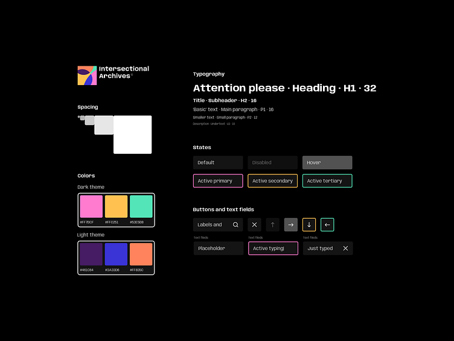
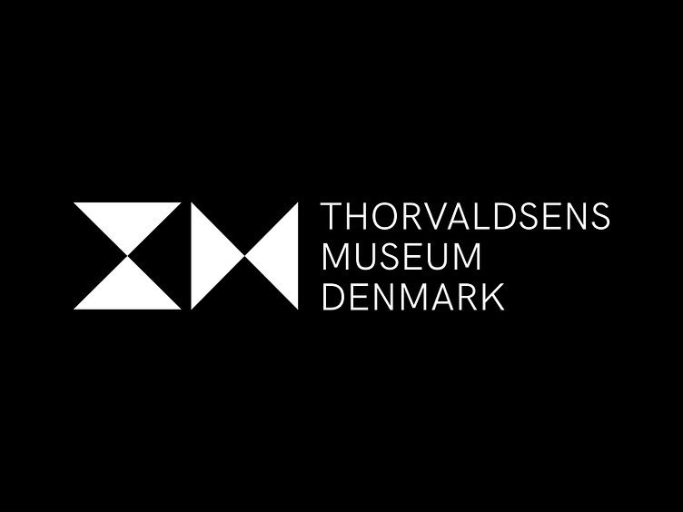
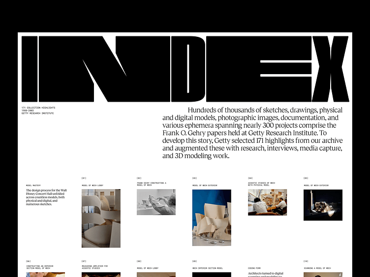
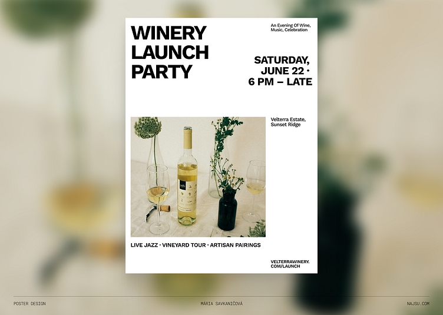
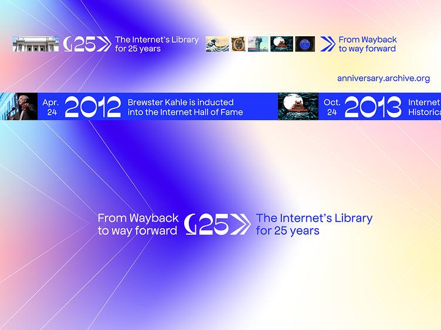

Foundation Archive • Image Generation Brief
Logo and OG Image direction for a preservation-first art archive.
Project voice
The product already points toward an editorial, archival, and cultural-institution
tone rather than a loud tech brand. The core idea is preservation, trust, legibility,
and care for artists' work.
Key cues pulled from the product:
- “Independent preservation”
- “A preservation archive for Foundation artists.”
- Warm paper background, ink-black typography, muted neutrals, restrained green and blue utility accents
- Editorial serif headline + mono metadata feel
Best-fit direction
Museum-grade restraint plus
archival framing plus
editorial poster composition.
Avoid:
- Crypto or NFT visual clichés
- Neon gradients as the main identity
- Cloud-backup, chain, hexagon, or padlock icons
- Playful mascot energy
Reference Set
Visual references to guide generation
These are not for copying literally. They define the tone, structure, and level of restraint
that fits Foundation Archive best.




Optional alternate energy
This one is more expressive and campaign-like. Good as a secondary reference for motion or a temporary launch visual,
but not as strong as the core brand direction.

Generation Prompts
Copy-paste prompts for ChatGPT image generation
Editorial
Preservation
Museum-grade
Warm paper
Serif + mono
Logo prompt
Design a logo for “Foundation Archive,” an independent preservation archive for Foundation artists. The concept should feel like a cultural institution and a living digital system at once: four archival corner marks form an open square or frame around a small preserved artwork tile or spark, subtly suggesting protection, indexing, and retrieval. Pair the mark with a refined editorial serif wordmark and restrained mono metadata accents. Use a warm paper, ink-black, stone, and muted green or slate palette. Style: timeless, precise, quiet, museum-grade, high negative space, subtle print grain. Avoid folders, clouds, padlocks, chains, hexagons, neon gradients, mascots, and generic NFT or web3 clichés. Show a primary mark, a horizontal lockup, a small favicon version, and monochrome versions.
OG image prompt
Create a 1200x630 open graph image for “Foundation Archive.” Use a premium editorial poster composition on warm off-white paper with subtle grain. Large serif headline: “A preservation archive for Foundation artists.” Surround the headline with a restrained grid of three to four abstract art tiles or framed placeholders, each held by archival corner marks, with tiny mono caption lines suggesting artist, title, and CID metadata. Add thin rules, registration marks, muted green or slate status dots, and a faint sense of networked preservation without looking sci-fi. Mood: calm, trustworthy, cultural, contemporary, archival. Keep the headline highly legible at link-preview size with generous margins. Avoid busy collage chaos, tiny unreadable labels, crypto clichés, coins, neon, and literal cloud-backup graphics.
One-line creative direction
Foundation Archive should look like an art institution that quietly knows how to keep culture alive online.